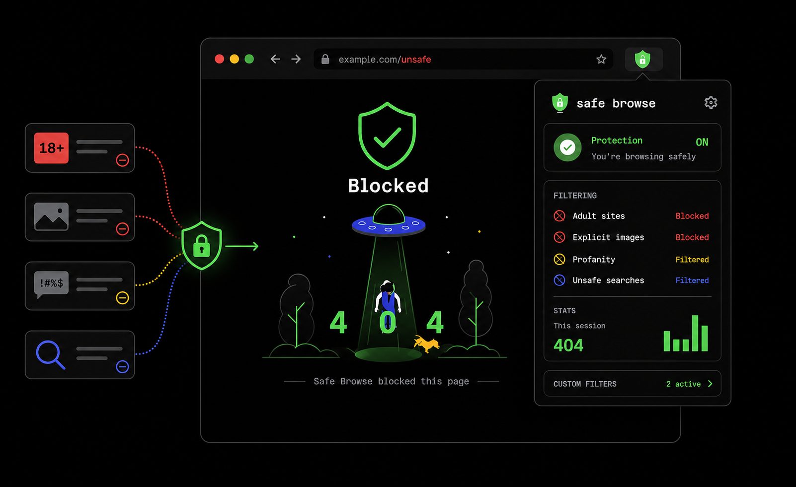
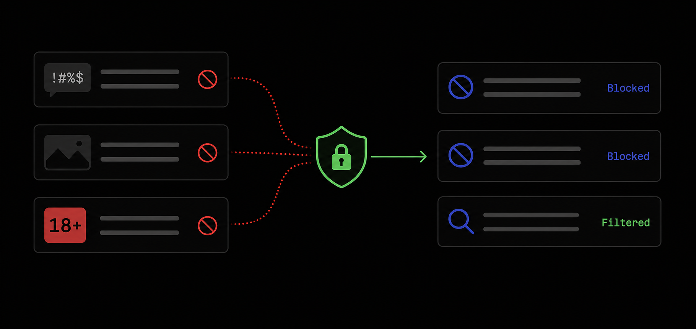
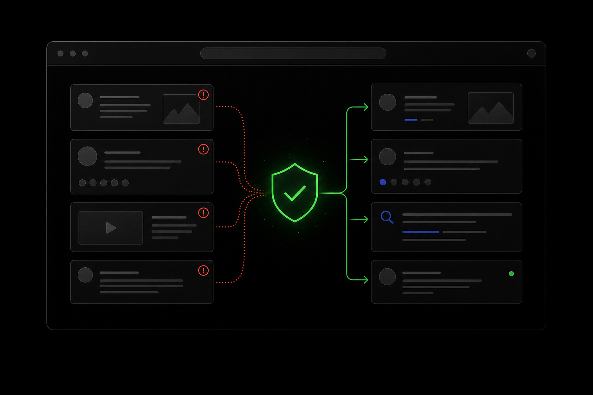

wash your browser clean.
A playful Chrome filter for profanity, lewd pages, explicit images, and unsafe search results. It works while you browse, so your screen feels less chaotic.

no lewd stuff, fewer nasty surprises
no lewd stuff, fewer nasty surprises
no lewd stuff, fewer nasty surprises
no lewd stuff, fewer nasty surprises
The web gets messy. We rinse it first.
wash-my-eyes catches profanity, adult sites, and explicit image cues before they take over the page. Cleaner feeds, calmer searches, less “why did I just see that?”

cleaner tabs, no tracking
cleaner tabs, no tracking
cleaner tabs, no tracking
cleaner tabs, no tracking
Fewer nasty surprises in every tab
Open search results, comment sections, and social feeds with a little more confidence. It filters quietly in the background, without turning browsing into a homework assignment.

Give your eyes a break
Install wash-my-eyes once, pin it if you like, and let it scrub the page before the mess lands.